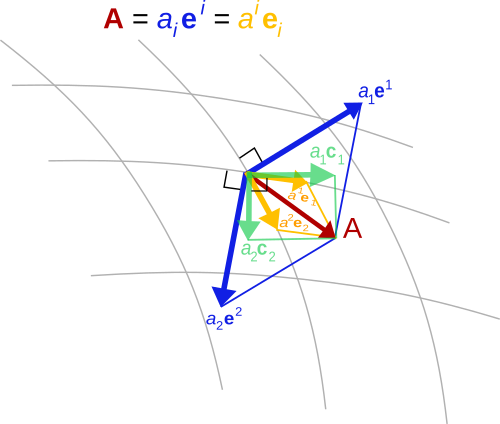

Mathematical Framework
In this section we are going to introduce some mathematical concepts and their representations in ClimaCore.jl.
Vectors and Vector Fields
Vector can mean a few things depending on context:
- In Julia, a
Vectoris just an ordered collection of values (i.e., a container). - In mathematics, a vector is an element of a vector space: a set of objects, which may be added together and multiplied by a scalar.
- In physics, a vector typically refers to a directional quantity: that something with both a direction and a magnitude. This is the best way to think of vectors in ClimaCore.jl.
A vector field is then a vector-valued field: that is an assignment of a vector to each point in a space. For instance, a vector field in the plane can be visualised as a collection of arrows with a given magnitude and direction, each attached to a point in the plane.
In a coordinate system, a vector field on a domain in n-dimensional Euclidean space can be represented as a vector-valued function that associates an n-tuple of real numbers to each point of the domain. This representation of a vector field depends on the coordinate system, and there are transformation laws for passing from one coordinate system to the other.
ClmaCore supports different coordinate systems and, therefore, vector representations. In fact, one of the key requirements of ClimaCore is to support vectors specified in orthogonal (Cartesian) and curvilinear coordinate systems.
LocalVector: UVector, UVVector, and UVWVector, etc; a "universal" basis
The easiest basis to use is the "UVW" basis, which can be defined in both Cartesian or spherical domains:
in a Cartesian domain, it is the usual Cartesian orthogonal vector basis (U along the X-axis, V along the Y-axis, W along the Z-axis).
in a spherical domain, it is the orthogonal basis relative to spherical (curvilinear) coordinates:
- U is the zonal (eastward) component
- V is the meridonal (northward) component
- W is the radial component
It has some nice properties which make it convenient:
- it's an orthonormal basis:
- it is easy to decompose a vector (take the projection along the basis)
- the components are easy to interpret (they have unit scale)
- allow us to write code across domains
- U and V are always horizontal, W is vertical
We can define "generic" vectors via UVector, UVVector, and UVWVector that can be equally defined on Cartesian or spherical spaces.
But if users need to compute with them, or feed differential operators with them, then may want to consider different bases, as not all operators accept all bases.
Covariant and Contravariant bases

Covariance and contravariance describe how the quantitative description of certain geometric or physical entities changes with a change of basis.
In ClimaCore.jl, the covariant basis is specified by the partial derivative of the transformation from the reference element $\xi \in [-1,1]^d$ (where $d$ is the dimensionality of the domain $\Omega$) to $x$ in the physical space:
\[\mathbf{e}_i = \frac{\partial x}{\partial \xi^i}\]
while the contravariant basis is the opposite: gradient in $x$ of the coordinate (the inverse map)
\[\mathbf{e}^i = \nabla_x \xi^i\]
Note:
these are specific to a given element: you generally can't compare covariant or contravariant component from one element with that in another
- in this case, you need to first convert them to UVW basis (e.g. we do this for DSS operations)
we choose the coordinates of the reference element so that $\xi^1$ and $\xi^2$ are horizontal, and $\xi^3$ is vertical
- in a Cartesian domain, this means that covariant and contravariant components are just rescaled versions of the UVW components.
- in a Cartesian domain, this means that covariant and contravariant components are just rescaled versions of the UVW components.
things get a little more complicated in the presence of terrain, but $\xi^3$ is radially aligned
- the 3rd covariant component is aligned with W, but the 3rd contravariant component may not be (e.g. at the surface it is normal to the boundary).
Cartesian bases
Analogously to CartesianPoints, in ClimaCore, there are also CartesianVectors: these allow conversion to a global Cartesian basis. It is intended mainly for visualization purposes.
Conversions
To convert between different vector bases, you need a LocalGeometry object: this contains all the necessary information (coordinates, metric terms, etc) to do the conversion. These are constructed as part of the Space.
Introduction to the Finite/Spectral Element Method
In finite element formulations, the weak form of a Partial Differential Equation (PDE)–-which involves integrating all terms in the PDE over the domain–-is evaluated on a subdomain $\Omega_e$ (element) and the local results are composed into a larger system of equations that models the entire problem on the global domain $\Omega$.
A spectral element space is a function space in which each function is approximated with a finite-dimensional polynomial interpolation in each element. Hence, we use polynomials as basis functions to approximate a given function (e.g., solution state). There are different ways of defininig basis functions: nodal basis functions and modal basis functions. We use nodal basis functions (e.g. by using Lagrange interpolation), which are defined via the values of the polynomials at particular nodal points in each element (termed Finite Element nodes). Even though the basis functions can interpolate globally, it’s better to limit each function to interpolate locally within each element, so to avoid a dense matrix system of equations when adding up the element contributions on the global domain $\Omega$.
The Finite Element nodes can be chosen to coincide with those of a particular quadrature rule, (this is referred to as using collocated nodes) which allows us to integrate functions over the domain.
Let us give a concrete example of strong and weak form of a PDE. A Poisson's problem (in strong form) is given by
\[ \nabla \cdot \nabla u = f, \textrm{ for } \mathbf{x} \in \Omega .\]
To obtain the weak form, let us multiply all terms by a test function $v$ and integrate by parts (i.e., apply the divergence theorem in multiple dimensions):
\[ \int_\Omega \nabla v \cdot \nabla u \, dV - \int_{\partial \Omega} v \nabla u \cdot \hat{\mathbf n}\, dS = \int_\Omega v f \, dV .\]
Often, we choose to represent a field (say, the velocity field) such that $\nabla u \cdot \hat{\mathbf n} = 0$, so that we're only left with the volumetric parts of the equation above.
The only supported choice for now in ClimaCore.jl is a Gauss-Legendre-Lobatto rule and nodes.